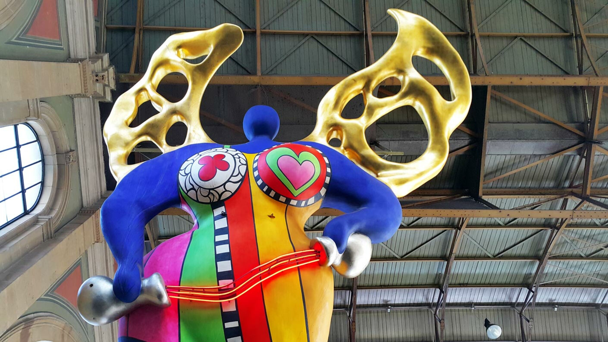

On behalf of your Retreat Organizing Committee 2024, we are excited to bring you the next MLS retreat!
• Meeting details: Wednesday 7th August at Zurich HB: 8 am (under the angel statue). The IR75 leaves from platform 7 at 08.35 (please don’t be late). We have a group ticket, so it is important to leave as a group.

• Location: Hotel Rigi Kaltbad
• Return info: leaving from Rigi Kaltbad-First at 15.15, arrival in Zürich HB at 17.25.
• What to Bring: Bring a swimsuit for enjoying the hotel's SPA and hiking shoes (or trekking shoes) if you wish to hike to Rigi Kulm or explore the surrounding trails!
Over 3 days, you will hear some great keynote talks and some awesome flash talks by your own peers, alongside interactive poster and networking sessions.